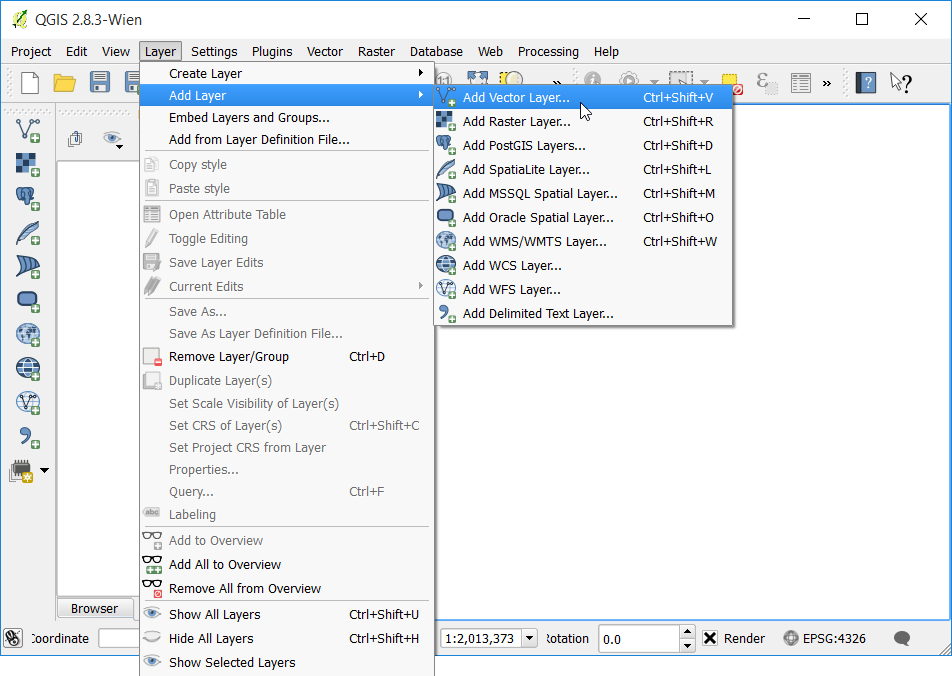
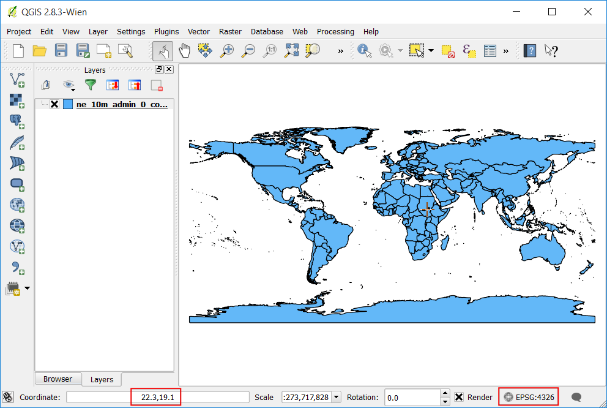
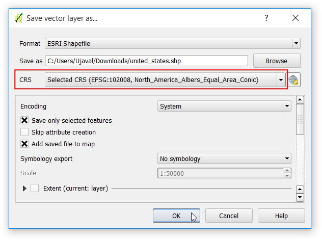
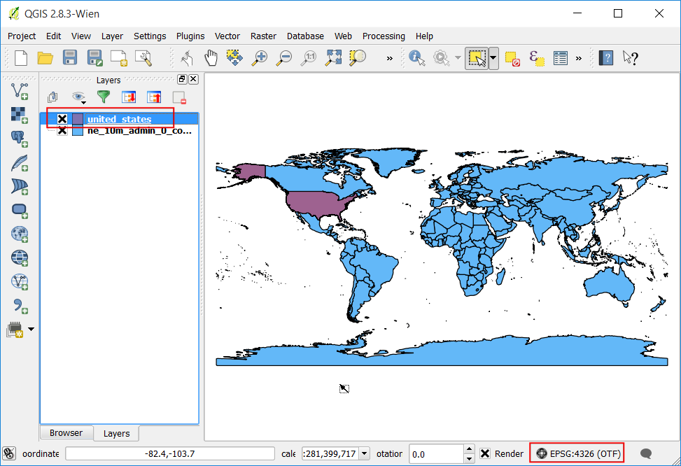
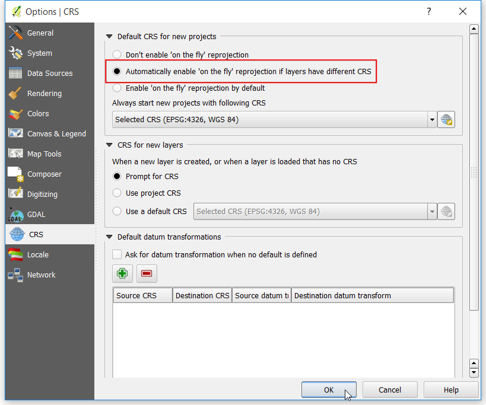
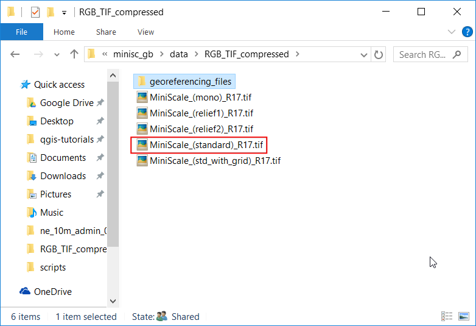
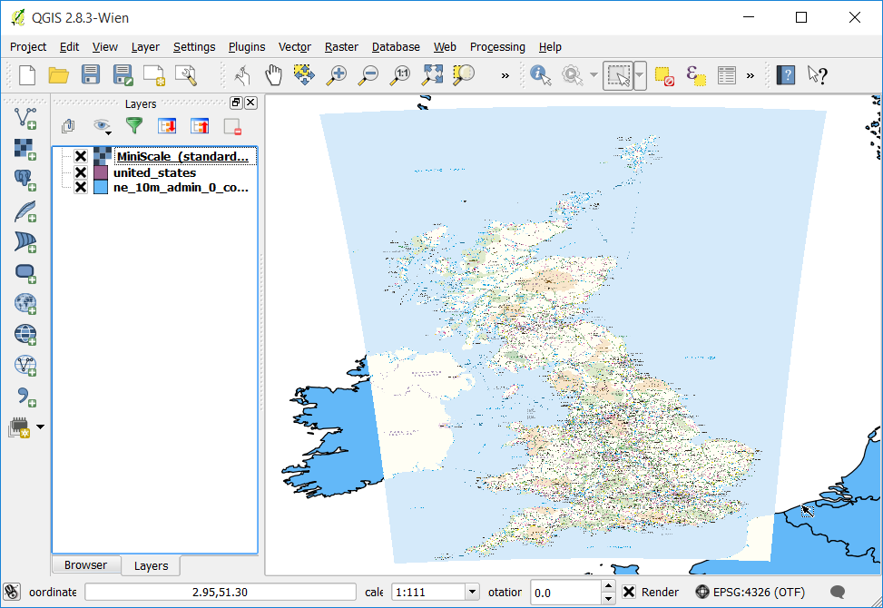

投影的操作
地圖的投影法，也稱之為座標參考系統 (CRS)，在處理 GIS 資料時常常是問題的來源。把它的概念與操作方法弄清楚，可以讓你的 GIS 之路輕鬆得多。本教學會說明在 QGIS 中，投影法是怎麼運作的，然後我們也會介紹一些針對向量檔和網格影像檔調整投影的工具，比較重要的像是重新投影向量和影像資料、開啟即時 CRS 轉換，以及指派 CRS 給那些沒有內建投影法的資料。
內容說明
在這裡我們要把使用不同投影法的圖層，在 QGIS 中重新投影後再疊圖。
操作流程
打開 QGIS，選擇 。

選擇 ne_10m_admin_0_countries.zip 並按下 確定。

在 QGIS 視窗的底部有個 座標 欄位，在移動滑鼠時，它會即時顯示目前區域的 X 和 Y 座標。另外在右下角還有一個寫著 EPSG:4326 的地方，這個就是本專案的 CRS (投影法)。

我們之後會看到，圖層本身的 CRS 未必會跟專案的 CRS 相同。如果要看某個圖層使用的投影法，要到詮釋資料中尋找。在 ne_10m_admin_0_countries 上按右鍵，選擇 屬性。

在 圖層屬性 視窗中切換到 詮釋資料 分頁，展開 屬性 欄位，在欄位最下面的 圖層的空間參考系統 一行就可以看到本圖層的指定投影法，它以 PROJ.4 格式標記。

現在就來看看要怎麼更改圖層的投影。這個步驟通常稱為 重新投影，可以針對整個圖層或是只對圖層上的某些圖徵進行操作。接下來我們使用 依區域或點擊選擇圖徵 按鈕，選擇美國的圖徵。

在 ne_10m_admin_0_countries 圖層上按右鍵然後選擇 存檔為...，

在 儲存向量圖層為... 的視窗中，把輸出檔命名為 united_states.shp，然後勾選 儲存僅選取的圖徵，這樣就能確保只有選擇的圖徵會被重新投影後輸出。接下來我們點選 選取 CRS 鈕，為這個圖徵選擇新的投影法。

在 選擇座標參考系統 視窗中的 過濾條件 欄位輸入 north america，在底下稍微捲動一下，找到並選取 North_America_Albers_Equal_Area_Conic (EPSG:102008)，然後按下確定。
註解
這裡選擇 Albers Equal Area Conic 投影的原因是它常常被用在各種美國的主題地圖上。實務上地圖投影法的選擇與製作地圖的目的息息相關。如想知道投影法的更多資訊可參考這裡。

回到剛才的 儲存向量圖層為... 視窗，此時新的 CRS 已經選取了。按下確定。

當這個重投影的圖層載入到 QGIS 中時，你會發現就算這兩個圖層的投影法不同， 美國 還是位於與 ne_10m_admin_0_countries 完全相同的位置上。這是因為 QGIS 中有個稱為「即時 CRS 轉換」的功能，你會看到 QGIS 視窗右下角的投影欄，在 EPSG:4326` 旁邊多了 OTF 的字樣，讓我們來稍微了解一下這個東西。

選擇 。

在 選項 視窗中切換到 CRS 分頁，你可以看到有個預設值是 如果圖層之間有不同的CRS，自動啟用即時座標投影轉換。這是說當 QGIS 偵測到讀入的圖層跟已經存在的圖層有不同的 CRS 時，它會自動把新圖曾以舊圖層的投影法重新投影，這樣他們就可以在正確的座標下自動對齊。按下 確定。

來關掉即時CRS轉換看會發生什麼事。點選視窗右下角的 現在的CRS 鈕，

在 專案屬性 視窗中，取消 開啟即時CRS轉換 的勾選，然後按下確定。

回到 QGIS 視窗中會看到剛才漂亮的世界地圖不見了！這是因為目前的專案 CRS 已經變成 North_America_Albers_Equal_Area_Conic，兩個圖層的座標和比例尺現在都不同了。右鍵點選 united_states 圖層，然後選擇 縮放到圖層範圍。

現在就可以看到美國以選擇的投影法呈現出來了。注意 ne_10m_admin_0_countries 圖層完全沒有顯示在畫面中，因為它和 united_states 圖層佔據了完全不同的座標。現在請回到 專案屬性 視窗中把 開啟即時CRS轉換 再度打開，本教學接下來都會在此模式下操作。

現在我們要切換到另一個地方，然後再加入一個影像圖層到專案中。找到先前的 minisc_gb.zip 然後把它解壓縮，內有一個稱為 RGB_TIF_COMPRESSED 的資料夾。你會發現內含的 .tif 圖片就只是 TIF 圖片，而不像 GeoTIFF 圖片般會含有投影資訊。如果我們想要在 GIS 系統中使用這張圖片，必須要先進行「空間對位」才行。空間對位檔案含有 2 種參數設置：影像的涵蓋範圍，或是投影方法。一般來說，影像涵蓋範圍的空間對位檔案，附檔名會是 .tfw 或 .jgw，通常我們會把它叫做 World file。大部分的 GIS 軟體如 QGIS 都可以讀取 World file 內儲存的地理空間資訊，並把他套用在相同資料夾下、相同主檔名的影像檔上。這張影像的 .tfw 檔案目前存在叫做 georeferencing_files 的資料夾內。

進入 georeferencing_files 內的 ESRI_TFW_FILES 資料夾，.tfw 檔案實際上是純文字檔，所以請用文字編輯器打開任一個 .tfw 檔看看。

World file 總共會有 6 行，每行都是數字。就如以下的說明所示，每行其實都是某個有關於影像檔的資訊。此格式相當有用，因為有時候有些檔案會沒有 world file，你必須要依照所知的資料，自己建立對應的 world file 才行。
Line 1: A: pixel size in the x-direction in map units/pixel
Line 2: D: rotation about y-axis
Line 3: B: rotation about x-axis
Line 4: E: pixel size in the y-direction in map units
Line 5: C: x-coordinate of the center of the upper left pixel
Line 6: F: y-coordinate of the center of the upper left pixel

從 georeferencing_files 資料夾內複製 MiniScale_(standard)_R17.tfw 到 RGB_TIF_COMPRESSED 底下，把 .tfw 和 .tif 檔擺在相同目錄，以供 QGIS 辨識。

在 QGIS 中選擇 ，選擇 MiniScale_(standard)_R17.tif 然後按 開啟。

英國地形測量局使用的是 British National Grid 投影法。在 選擇座標參考系統 視窗中，搜尋 british national 然後選擇 OSGB 1936 / British National Grid (EPSG:27700) 這個 CRS，最後按下 確定。

MiniScale_(standard)_R17 圖層載入後，以右鍵點選，選擇 縮放到圖層範圍。

最後我們就可以看到此圖層已經疊到 ne_10m_admin_0_countries 向量圖層之上了。因為我們已經啟用 OTF 模式而且把 CRS 設成 EPSG:4326，MiniScale_(standard)_R17 圖層會自動重新投影到 EPSG:4326，使用與其它圖層相同的座標系統顯示在畫面中。
